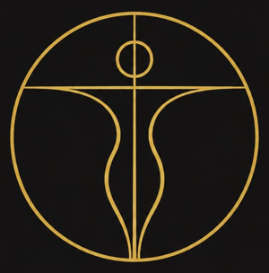
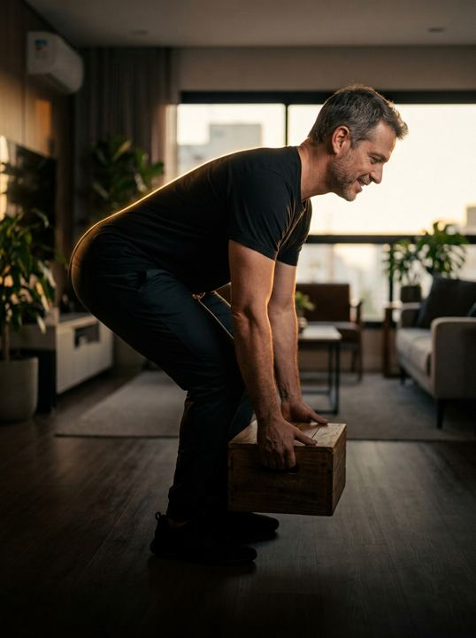

<!doctype html>
<html lang="pt-BR">
<head>
<meta charset="utf-8">
<meta name="viewport" content="width=device-width, initial-scale=1, viewport-fit=cover">
<title>Raio-X Biomecânico · Área de membros</title>
<meta name="theme-color" content="#0F0F0E">
<meta name="apple-mobile-web-app-capable" content="yes">
<meta name="apple-mobile-web-app-status-bar-style" content="black-translucent">
<meta name="apple-mobile-web-app-title" content="Raio-X">
<link rel="icon" type="image/png" href="assets/simbolo.png">
<link rel="apple-touch-icon" href="assets/simbolo.png">
<link rel="preconnect" href="https://fonts.googleapis.com">
<link rel="preconnect" href="https://fonts.gstatic.com" crossorigin>
<link rel="stylesheet" href="https://fonts.googleapis.com/css2?family=Cinzel:wght@500;600;700&family=Cormorant+Garamond:ital,wght@1,500;1,600&family=Outfit:wght@300;400;500;600;700;800&display=swap">
<style>
/* Layout: app de celular (coluna até 480px) com barra de abas fixa embaixo. Início = sequência da semana + checkpoint atual + jornada; Aula = vídeo + concluir; Calendário = mês com dias treinados. Tema único escuro, identidade Linha de Ouro. */
:root{
  --carvao:#0F0F0E;
  --carvao-2:#171614;
  --cartao:#1E1D1A;
  --grafite:#2A2823;
  --linha:#35322B;
  --osso:#E0E0E0;
  --texto:#F6F3EC;
  --apoio:#B8B2A6;
  --mudo:#857F73;
  --ambar:#D4A017;
  --ambar-claro:#EEC452;
  --ambar-escuro:#8A6810;
  --tinta:#121212;
  --verde:#7FBF7F;
  --marca:'Cinzel', 'Trajan Pro', Georgia, serif;
  --corpo:'Outfit', 'Avenir Next', 'Segoe UI', system-ui, sans-serif;
  --virada:'Cormorant Garamond', Garamond, Georgia, serif;
  --ease:cubic-bezier(.2,.7,.2,1);
  color-scheme:dark;
}
*{box-sizing:border-box;-webkit-tap-highlight-color:transparent}
html,body{background:var(--carvao)}
body{margin:0;color:var(--texto);font-family:var(--corpo);font-size:16px;line-height:1.5;-webkit-font-smoothing:antialiased}
img,video{display:block;max-width:100%}
button{font:inherit;color:inherit;background:none;border:0;cursor:pointer;padding:0}
button:focus-visible,a:focus-visible{outline:2px solid var(--ambar-claro);outline-offset:3px;border-radius:8px}
h1,h2,h3,p{margin:0}
.app{max-width:480px;margin:0 auto;min-height:100vh;padding:0 18px calc(96px + env(safe-area-inset-bottom, 0px));position:relative}
.rotulo{font-family:var(--marca);font-size:11px;font-weight:600;letter-spacing:.24em;text-transform:uppercase;color:var(--ambar)}
.rotulo.mudo{color:var(--mudo)}
.virada{font-family:var(--virada);font-style:italic;font-weight:600;color:var(--ambar)}
.entra{animation:entra .35s var(--ease) both}
@keyframes entra{from{opacity:0;transform:translateY(10px)}to{opacity:1;transform:none}}

/* Marca */
.marca{display:flex;align-items:center;gap:10px;padding-top:calc(14px + env(safe-area-inset-top, 0px));padding-bottom:12px;border-bottom:1px solid rgba(212,160,23,.22)}
.marca img{width:30px;height:30px;object-fit:contain;mix-blend-mode:lighten}
.marca span{font-family:var(--marca);font-size:12px;font-weight:600;letter-spacing:.2em;white-space:nowrap;color:var(--ambar)}
.marca i{flex:1}
.marca small{font-family:var(--marca);font-size:9px;font-weight:600;letter-spacing:.14em;white-space:nowrap;color:var(--mudo)}
/* Topo */
.topo{display:flex;align-items:center;justify-content:space-between;gap:12px;padding-block:18px 14px}
.ola{display:flex;align-items:center;gap:12px;min-width:0}
.avatar{width:44px;height:44px;border-radius:50%;background:linear-gradient(160deg,var(--grafite),var(--carvao-2));border:1px solid var(--ambar);display:grid;place-items:center;font-weight:700;color:var(--ambar);flex:none}
.ola small{display:block;font-size:13px;color:var(--mudo)}
.ola b{font-size:18px;font-weight:700}
.chama{display:flex;align-items:center;gap:6px;white-space:nowrap;flex:none;padding:8px 12px;border-radius:999px;background:rgba(212,160,23,.12);border:1px solid rgba(212,160,23,.4);font-weight:700;font-size:15px;color:var(--ambar-claro);font-variant-numeric:tabular-nums}

/* Semana estilo GymRats */
.semana{display:grid;grid-template-columns:repeat(7,1fr);gap:6px;padding:14px 12px;border-radius:20px;background:var(--carvao-2);border:1px solid var(--linha)}
.dia{display:flex;flex-direction:column;align-items:center;gap:6px}
.dia span{font-size:11px;font-weight:600;letter-spacing:.06em;color:var(--mudo);text-transform:uppercase}
.dia i{width:36px;height:36px;border-radius:50%;display:grid;place-items:center;font-style:normal;font-size:14px;font-weight:600;color:var(--apoio);border:1.5px solid var(--linha);font-variant-numeric:tabular-nums}
.dia.feito i{background:linear-gradient(160deg,var(--ambar-claro),var(--ambar));border-color:transparent;color:var(--tinta)}
.dia.hoje i{border-color:var(--ambar);color:var(--texto);box-shadow:0 0 0 3px rgba(212,160,23,.18)}
.dia.hoje span{color:var(--ambar)}
.dia.futuro i{opacity:.45}

/* Cartão do checkpoint atual */
.atual{position:relative;margin-top:18px;border-radius:24px;overflow:hidden;min-height:250px;display:flex;flex-direction:column;justify-content:flex-end;padding:20px;border:1px solid rgba(212,160,23,.55);isolation:isolate;text-align:left;width:100%}
.atual img{position:absolute;inset:0;width:100%;height:100%;object-fit:cover;z-index:-2}
.atual::before{content:"";position:absolute;inset:0;z-index:-1;background:linear-gradient(180deg,rgba(15,15,14,.1),rgba(15,15,14,.92) 72%)}
.atual h2{font-size:26px;line-height:1.15;font-weight:800;letter-spacing:-.02em;margin:6px 0 4px}
.atual .meta{display:flex;align-items:center;gap:10px;font-size:14px;color:var(--apoio)}
.play-btn{position:absolute;top:18px;right:18px;width:52px;height:52px;border-radius:50%;background:var(--ambar);display:grid;place-items:center;box-shadow:0 10px 30px -6px rgba(212,160,23,.7)}
.continuar{display:flex;align-items:center;justify-content:center;gap:10px;margin-top:14px;width:100%;min-height:54px;border-radius:999px;background:linear-gradient(180deg,var(--ambar-claro),var(--ambar));color:var(--tinta);font-weight:700;font-size:17px}

/* Progresso */
.progresso{margin-top:18px;padding:16px 18px;border-radius:18px;background:var(--carvao-2);border:1px solid var(--linha);display:flex;flex-direction:column;gap:10px}
.progresso-topo{display:flex;justify-content:space-between;align-items:baseline;gap:10px}
.progresso-topo b{font-size:15px;font-weight:600}
.progresso-topo span{font-size:14px;color:var(--apoio);font-variant-numeric:tabular-nums}
.barra{height:8px;border-radius:4px;background:var(--grafite);overflow:hidden}
.barra i{display:block;height:100%;border-radius:4px;background:linear-gradient(90deg,var(--ambar-escuro),var(--ambar),var(--ambar-claro));transition:width .8s var(--ease)}

/* Jornada */
.secao{display:flex;justify-content:space-between;align-items:baseline;margin:28px 0 12px}
.secao h3{font-size:20px;font-weight:700}
.jornada{list-style:none;margin:0;padding:0;display:flex;flex-direction:column;gap:10px;position:relative}
.cp{display:grid;grid-template-columns:84px 1fr auto;gap:14px;align-items:center;padding:10px;border-radius:18px;background:var(--carvao-2);border:1px solid var(--linha);width:100%;text-align:left;position:relative}
.cp.atualcp{border-color:var(--ambar);background:linear-gradient(160deg,rgba(212,160,23,.12),var(--carvao-2) 60%)}
.thumb{position:relative;width:84px;height:84px;border-radius:14px;overflow:hidden;background:var(--grafite)}
.thumb img{width:100%;height:100%;object-fit:cover}
.cp.bloq .thumb img{filter:grayscale(1) brightness(.45) blur(1.5px)}
.thumb .cad{position:absolute;inset:0;display:grid;place-items:center}
.cp-info{min-width:0;display:flex;flex-direction:column;gap:4px}
.cp-info small{font-family:var(--marca);font-size:10px;font-weight:600;letter-spacing:.2em;color:var(--ambar)}
.cp.bloq .cp-info small{color:var(--mudo)}
.cp-info b{font-size:16px;font-weight:600;line-height:1.25}
.cp.bloq .cp-info b{color:var(--apoio)}
.regiao{display:inline-flex;align-items:center;gap:8px;font-size:12px;color:var(--apoio)}
.mini7{display:inline-flex;gap:3px}
.mini7 i{width:6px;height:6px;border-radius:50%;background:#3A372F}
.mini7 i.on{background:var(--ambar);box-shadow:0 0 6px rgba(212,160,23,.8)}
.cp.bloq .mini7 i.on{background:#6B6556;box-shadow:none}
.status{width:34px;height:34px;border-radius:50%;display:grid;place-items:center;flex:none}
.status.ok{background:var(--ambar);color:var(--tinta)}
.status.agora{border:1.5px solid var(--ambar);color:var(--ambar)}
.status.lock{border:1px solid var(--linha);color:var(--mudo)}

/* Tela da aula */
.voltar{display:inline-flex;align-items:center;gap:8px;min-height:44px;color:var(--apoio);font-size:15px;margin-top:8px}
.player{position:relative;margin-top:6px;border-radius:20px;overflow:hidden;background:#141414;border:1px solid var(--linha);aspect-ratio:16/9}
.player video,.player img{width:100%;height:100%;object-fit:cover}
.player .breve{position:absolute;inset:0;display:flex;flex-direction:column;align-items:center;justify-content:center;gap:10px;background:rgba(15,15,14,.72);text-align:center;padding:16px}
.player .breve b{font-size:16px}
.player .breve span{font-size:13px;color:var(--apoio)}
.aula-cab{display:flex;flex-direction:column;gap:8px;margin-top:18px}
.aula-cab h1{font-size:28px;line-height:1.12;font-weight:800;letter-spacing:-.02em}
.chips{display:flex;flex-wrap:wrap;gap:8px}
.chip{display:inline-flex;align-items:center;gap:8px;padding:6px 12px;border-radius:999px;font-size:13px;background:rgba(255,255,255,.04);border:1px solid var(--linha);color:var(--osso)}
.etapas{margin-top:20px;display:flex;flex-direction:column;gap:8px}
.etapa{display:flex;align-items:center;gap:12px;padding:14px 16px;border-radius:16px;background:var(--carvao-2);border:1px solid var(--linha)}
.etapa i{flex:none;width:28px;height:28px;border-radius:50%;display:grid;place-items:center;font-style:normal;font-size:13px;font-weight:700;border:1px solid var(--ambar);color:var(--ambar)}
.etapa div{display:flex;flex-direction:column}
.etapa b{font-size:15px;font-weight:600}
.etapa span{font-size:13px;color:var(--mudo)}
.bloco{margin-top:22px;display:flex;flex-direction:column;gap:10px}
.bloco p{font-size:15px;color:var(--osso);line-height:1.5}
.protocolos{list-style:none;margin:0;padding:0;display:flex;flex-direction:column;gap:8px}
.protocolos li{display:flex;align-items:center;justify-content:space-between;gap:12px;padding:12px 14px;border-radius:14px;background:var(--carvao-2);border:1px solid var(--linha)}
.protocolos b{font-size:14px;font-weight:500;line-height:1.35}
.protocolos .tag{flex:none;font-size:11px;letter-spacing:.06em;text-transform:uppercase;color:var(--ambar-claro);border:1px solid rgba(212,160,23,.4);border-radius:999px;padding:4px 9px}
.concluir{position:sticky;bottom:calc(84px + env(safe-area-inset-bottom, 0px));margin-top:22px;width:100%;min-height:58px;border-radius:999px;display:flex;align-items:center;justify-content:center;gap:10px;font-weight:700;font-size:17px;background:linear-gradient(180deg,var(--ambar-claro),var(--ambar));color:var(--tinta);box-shadow:0 14px 34px -12px rgba(212,160,23,.8)}
.concluir.feito{background:var(--cartao);color:var(--ambar-claro);border:1px solid rgba(212,160,23,.5);box-shadow:none}

/* Celebração */
.cel-fundo{position:fixed;inset:0;z-index:60;background:rgba(8,8,8,.8);-webkit-backdrop-filter:blur(4px);backdrop-filter:blur(4px);display:grid;place-items:center;padding:24px;animation:surge .2s ease-out}
.cel{width:100%;max-width:380px;border-radius:28px;padding:30px 24px 24px;text-align:center;background:radial-gradient(120% 80% at 50% 0%,rgba(212,160,23,.28),transparent 60%),var(--cartao);border:1px solid rgba(212,160,23,.6);display:flex;flex-direction:column;align-items:center;gap:12px;animation:pula .5s var(--ease)}
.medalha{width:96px;height:96px;border-radius:50%;display:grid;place-items:center;background:linear-gradient(160deg,var(--ambar-claro),var(--ambar-escuro));box-shadow:0 0 0 8px rgba(212,160,23,.15),0 0 40px rgba(212,160,23,.6)}
.cel h2{font-size:26px;font-weight:800}
.cel p{color:var(--apoio);font-size:15px}
.cel .liberado{margin-top:6px;width:100%;display:flex;align-items:center;gap:12px;padding:12px;border-radius:16px;background:var(--carvao-2);border:1px solid var(--linha);text-align:left}
.cel .liberado img{width:56px;height:56px;border-radius:12px;object-fit:cover}
.cel .liberado small{font-family:var(--marca);font-size:10px;letter-spacing:.2em;color:var(--ambar)}
.cel .liberado b{display:block;font-size:15px}
.cel .continuar{margin-top:8px}
@keyframes surge{from{opacity:0}to{opacity:1}}
@keyframes pula{0%{transform:scale(.85);opacity:0}60%{transform:scale(1.03);opacity:1}100%{transform:none}}
.confete{position:fixed;inset:0;pointer-events:none;z-index:61;overflow:hidden}
.confete i{position:absolute;top:-12px;width:8px;height:14px;border-radius:2px;animation:cai 1.6s ease-in forwards}
@keyframes cai{to{transform:translateY(105vh) rotate(540deg);opacity:.2}}

/* Calendário */
.cal-cab{display:flex;align-items:center;justify-content:space-between;margin-top:18px}
.cal-cab h2{font-size:22px;font-weight:700;text-transform:capitalize}
.cal-nav{display:flex;gap:8px}
.cal-nav button{width:44px;height:44px;border-radius:50%;border:1px solid var(--linha);display:grid;place-items:center;color:var(--apoio)}
.stats{display:grid;grid-template-columns:repeat(3,1fr);gap:10px;margin-top:18px}
.stats div{padding:14px 12px;border-radius:16px;background:var(--carvao-2);border:1px solid var(--linha);display:flex;flex-direction:column;gap:2px}
.stats strong{font-size:28px;line-height:1.1;font-weight:800;color:var(--ambar);font-variant-numeric:tabular-nums}
.stats span{font-size:12px;color:var(--apoio)}
.grade-mes{margin-top:18px;padding:16px 12px;border-radius:20px;background:var(--carvao-2);border:1px solid var(--linha);display:grid;grid-template-columns:repeat(7,1fr);gap:6px}
.grade-mes .sem{text-align:center;font-size:11px;font-weight:600;letter-spacing:.06em;color:var(--mudo);padding-bottom:4px}
.grade-mes .d{aspect-ratio:1;border-radius:50%;display:grid;place-items:center;font-size:14px;color:var(--apoio);font-variant-numeric:tabular-nums;position:relative}
.grade-mes .d.f{background:linear-gradient(160deg,var(--ambar-claro),var(--ambar));color:var(--tinta);font-weight:700}
.grade-mes .d.h{box-shadow:inset 0 0 0 1.5px var(--ambar);color:var(--texto);font-weight:600}
.grade-mes .d.fut{opacity:.35}
.legenda{display:flex;gap:16px;margin-top:12px;font-size:13px;color:var(--apoio)}
.legenda span{display:inline-flex;align-items:center;gap:6px}
.legenda i{width:12px;height:12px;border-radius:50%}
.historico{list-style:none;margin:0;padding:0;display:flex;flex-direction:column;gap:8px}
.historico li{display:flex;justify-content:space-between;gap:12px;padding:12px 16px;border-radius:14px;background:var(--carvao-2);border:1px solid var(--linha);font-size:14px}
.historico li span{color:var(--mudo)}
.reset{display:block;margin:22px auto 0;min-height:44px;color:var(--mudo);font-size:13px;text-decoration:underline;text-underline-offset:3px}

/* Crise */
.crise{margin-top:18px;border-radius:24px;padding:22px;background:linear-gradient(160deg,#3A2D0C,#1C1810);border:1px solid rgba(212,160,23,.6);display:flex;flex-direction:column;gap:12px}
.crise h1{font-size:28px;font-weight:800;line-height:1.1}
.crise p{color:var(--apoio);font-size:15px}

/* Abas */
.abas{position:fixed;left:0;right:0;bottom:0;z-index:40;background:rgba(15,15,14,.94);-webkit-backdrop-filter:blur(12px);backdrop-filter:blur(12px);border-top:1px solid rgba(212,160,23,.25);padding-bottom:env(safe-area-inset-bottom, 0px)}
.abas div{max-width:480px;margin:0 auto;display:grid;grid-template-columns:repeat(3,1fr)}
.aba{min-height:66px;display:flex;flex-direction:column;align-items:center;justify-content:center;gap:4px;font-size:12px;font-weight:500;color:var(--mudo)}
.aba.on{color:var(--ambar)}
.aba.on svg{filter:drop-shadow(0 0 6px rgba(212,160,23,.6))}
@media (prefers-reduced-motion:reduce){*,*::before,*::after{animation:none!important;transition:none!important}}
.credito{display:block;text-align:center;margin:28px auto 0;padding:8px 0;font-size:12px;letter-spacing:.04em;color:var(--mudo);text-decoration:none;opacity:.5;border:0}
.credito b{font-family:inherit;font-weight:600;letter-spacing:.04em;color:inherit}
.credito:hover{opacity:.8}
</style>
</head>
<body>
<main class="app" id="app" aria-live="polite"></main>
<nav class="abas" aria-label="Navegação"><div id="abas"></div></nav>

<script>
(function(){
  var CHAVE = 'despertar-membros-v1';
  var NOS = ['Cabeça','Ombros','Mãos','Coluna','Quadris','Joelhos','Pés'];
  /* Checkpoints: as 12 fases do documento "Checkpoints Raio-X Biomecânico". a = o que avalia, p = protocolos [nome, recurso]. */
  var CPS = [
    {"n": 1, "t": "Postura parada", "r": "Postura", "nos": [0, 1, 3, 4], "img": "foto-mulher-parede", "a": "Como o corpo se organiza parado: cabeça, ombros, pelve e costelas.", "p": [["Reeducação postural ativa na parede", "Exercício"], ["Pontos de digitopressão para a postura", "Digitopressão"], ["Pontos auriculares da postura", "Digitopressão"], ["Kinesio tape postural", "Bandagem"]]},
    {"n": 2, "t": "Análise da marcha", "r": "Pés e quadris", "nos": [4, 5, 6], "img": "hero-mobile", "a": "Como você caminha e onde o passo perde o alinhamento.", "p": [["Reeducação da marcha", "Exercício"], ["Exercícios de correção: tibial anterior e glúteo médio", "Exercício"], ["Digitopressão para o padrão de marcha", "Digitopressão"]]},
    {"n": 3, "t": "Agachamento livre e acima da cabeça", "r": "Tornozelo e quadril", "nos": [1, 4, 5, 6], "img": "ilu-unipodal", "vid": "teste-t3", "a": "Agachamento livre e com os braços acima da cabeça.", "p": [["Mobilização de tornozelo e quadril", "Mobilização"], ["Fortalecimento: goblet squat e agachamento na parede", "Exercício"], ["Digitopressão para o agachamento", "Digitopressão"], ["Kinesio tape de joelho", "Bandagem"]]},
    {"n": 4, "t": "Testes de mobilidade", "r": "Quadril, coluna e ombro", "nos": [1, 3, 4], "img": "ilu-cama", "vid": "teste-t1", "a": "Thomas, Ober, Wall Angel e mobilidade de ombro.", "p": [["Alongamento do iliopsoas", "Alongamento"], ["Alongamento do TFL", "Alongamento"], ["Mobilidade torácica e do ombro", "Mobilização"], ["Mobilidade de ombro", "Mobilização"], ["Digitopressão para mobilidade", "Digitopressão"]]},
    {"n": 5, "t": "Mobilidade neural", "r": "Nervos das pernas", "nos": [3, 4, 5], "img": "t1", "a": "Elevação da perna estendida (ASLR e SLR) e Slump.", "p": [["Neural flossing do nervo ciático", "Neurodinâmica"], ["Alongamento dos posteriores da coxa", "Alongamento"], ["Digitopressão para tensão neural", "Digitopressão"], ["Kinesio tape de descompressão", "Bandagem"]]},
    {"n": 6, "t": "Estabilidade do core", "r": "Centro do corpo", "nos": [3, 4], "img": "foto-homem-caixa", "a": "Pontes, estabilidade rotacional e flexão de tronco.", "p": [["Progressão de core: dead bug, bird dog e prancha", "Exercício"], ["Integração core e glúteo: ponte e clamshell", "Exercício"], ["Digitopressão para o core", "Digitopressão"], ["Pontos auriculares do core", "Digitopressão"], ["Kinesio tape de core", "Bandagem"]]},
    {"n": 7, "t": "Controle em uma perna", "r": "Glúteo e joelho", "nos": [4, 5, 6], "img": "t3", "a": "Agachamento em uma perna, Y Balance e step down.", "p": [["Glúteo médio: progressão para uma perna", "Exercício"], ["Glúteo máximo: levantamento terra unilateral e step up", "Exercício"], ["Mobilidade de quadril 90/90", "Alongamento"], ["Digitopressão para controle unipodal", "Digitopressão"]]},
    {"n": 8, "t": "Membros superiores", "r": "Ombros e escápulas", "nos": [1, 2], "img": "ilu-parede", "vid": "teste-t2", "a": "Y Balance de membro superior e CKCUES.", "p": [["Fortalecimento escapular: serratus punch, Y, T, W e I", "Exercício"], ["Mobilidade escapular e do ombro", "Mobilização"], ["Digitopressão para membro superior", "Digitopressão"], ["Kinesio tape de ombro", "Bandagem"]]},
    {"n": 9, "t": "Alta demanda", "r": "Saltos e aterrissagem", "nos": [4, 5, 6], "img": "t2", "a": "Hop test e drop jump.", "p": [["Potência e controle reativo", "Exercício"], ["Propriocepção e estabilidade", "Exercício"], ["Digitopressão para alta demanda", "Digitopressão"]]},
    {"n": 10, "t": "Avaliação energética", "r": "MTC", "nos": [0, 1, 2, 3, 4, 5, 6], "img": "douglas-03-jaleco", "a": "Testes manuais por meridiano, da Medicina Tradicional Chinesa.", "p": [["Princípio do cuidado por meridiano", "Orientação"], ["Digitopressão por meridiano", "Digitopressão"], ["Reflexologia nos pés", "Digitopressão"], ["Reflexologia nas mãos", "Digitopressão"]]},
    {"n": 11, "t": "Correlação dento-neural", "r": "Mandíbula e cervical", "nos": [0], "img": "hero-desktop", "a": "A relação entre dentes, mordida e dores à distância.", "p": [["Digitopressão para focos dentários", "Digitopressão"], ["Massagem peri-oral e mandibular", "Automassagem"], ["Pontos auriculares dentários", "Digitopressão"], ["Orientação para avaliação odontológica", "Orientação"]]},
    {"n": 12, "t": "Mobilização Y e W", "r": "Ombros e coluna", "nos": [1, 3], "img": "foto-mulher-parede", "a": "Alongamentos ativos em Y e em W, com progressão.", "p": [["Y stretching completo", "Alongamento"], ["W stretching completo", "Alongamento"], ["Progressão com resistência", "Exercício"], ["Integração com a respiração", "Respiração"], ["Digitopressão integrativa", "Digitopressão"]]}
  ];

  function iso(d){ return d.getFullYear()+'-'+String(d.getMonth()+1).padStart(2,'0')+'-'+String(d.getDate()).padStart(2,'0'); }
  function diasAtras(n){ var d=new Date(); d.setHours(12,0,0,0); d.setDate(d.getDate()-n); return iso(d); }
  function exemplo(){ return { nome:'Maria', feitos:[1,2], dias:[diasAtras(1),diasAtras(2),diasAtras(3),diasAtras(5),diasAtras(6),diasAtras(9),diasAtras(10),diasAtras(12)], tela:'inicio', cp:3, mes:null }; }
  function carregar(){ try{ var s=localStorage.getItem(CHAVE); return s?JSON.parse(s):null; }catch(e){ return null; } }
  function salvar(){ try{ localStorage.setItem(CHAVE, JSON.stringify(E)); }catch(e){} }
  var E = carregar() || exemplo();

  var app = document.getElementById('app'), abas = document.getElementById('abas');
  var hoje = new Date(); hoje.setHours(12,0,0,0); var HOJE = iso(hoje);

  /* Ícones */
  var ic = {
    play:'<svg width="22" height="22" viewBox="0 0 24 24" aria-hidden="true"><path d="M8 5v14l11-7z" fill="currentColor"/></svg>',
    check:'<svg width="18" height="18" viewBox="0 0 24 24" aria-hidden="true"><path d="M5 12.5l4.5 4.5L19 7.5" fill="none" stroke="currentColor" stroke-width="2.6" stroke-linecap="round" stroke-linejoin="round"/></svg>',
    lock:'<svg width="16" height="16" viewBox="0 0 24 24" aria-hidden="true"><rect x="5" y="11" width="14" height="10" rx="2" fill="none" stroke="currentColor" stroke-width="1.8"/><path d="M8 11V8a4 4 0 0 1 8 0v3" fill="none" stroke="currentColor" stroke-width="1.8"/></svg>',
    lockG:'<svg width="26" height="26" viewBox="0 0 24 24" aria-hidden="true"><rect x="5" y="11" width="14" height="10" rx="2" fill="none" stroke="#B8B2A6" stroke-width="1.8"/><path d="M8 11V8a4 4 0 0 1 8 0v3" fill="none" stroke="#B8B2A6" stroke-width="1.8"/></svg>',
    fogo:'<svg width="18" height="18" viewBox="0 0 24 24" aria-hidden="true"><path d="M12 2c1 4 5 6 5 11a5 5 0 0 1-10 0c0-2.5 1.2-4 2.5-5.2C9.7 10 10.5 11.5 12 12c-1-3.5.5-7 0-10z" fill="currentColor"/></svg>',
    seta:'<svg width="20" height="20" viewBox="0 0 20 20" aria-hidden="true"><path d="M3 10h13M11 4l6 6-6 6" fill="none" stroke="currentColor" stroke-width="2"/></svg>',
    volta:'<svg width="20" height="20" viewBox="0 0 20 20" aria-hidden="true"><path d="M17 10H4M9 4l-6 6 6 6" fill="none" stroke="currentColor" stroke-width="2"/></svg>',
    casa:'<svg width="24" height="24" viewBox="0 0 24 24" aria-hidden="true"><path d="M3.5 11L12 4l8.5 7M6 9.5V20h4.5v-5.5h3V20H18V9.5" fill="none" stroke="currentColor" stroke-width="1.8" stroke-linejoin="round"/></svg>',
    cal:'<svg width="24" height="24" viewBox="0 0 24 24" aria-hidden="true"><rect x="3.5" y="5" width="17" height="15.5" rx="2.5" fill="none" stroke="currentColor" stroke-width="1.8"/><path d="M3.5 10h17M8 3v4M16 3v4" stroke="currentColor" stroke-width="1.8" stroke-linecap="round"/></svg>',
    sos:'<svg width="24" height="24" viewBox="0 0 24 24" aria-hidden="true"><circle cx="12" cy="12" r="8.5" fill="none" stroke="currentColor" stroke-width="1.8"/><path d="M12 7.5v5l3 2" fill="none" stroke="currentColor" stroke-width="1.8" stroke-linecap="round"/></svg>',
    medalha:'<svg width="48" height="48" viewBox="0 0 24 24" aria-hidden="true"><path d="M5 12.5l4.5 4.5L19 7.5" fill="none" stroke="#121212" stroke-width="2.8" stroke-linecap="round" stroke-linejoin="round"/></svg>'
  };
  var marca = '<div class="marca"><span>CORPO PRIMAZ</span><i></i><small>RAIO-X BIOMECÂNICO</small></div>';
  function mini7(nos){ return '<span class="mini7" aria-hidden="true">'+NOS.map(function(_,k){return '<i class="'+(nos.indexOf(k)>-1?'on':'')+'"></i>';}).join('')+'</span>'; }
  function estadoCp(c){ return E.feitos.indexOf(c.n)>-1 ? 'ok' : (c.n===proximo() ? 'agora' : 'lock'); }
  function proximo(){ for (var i=0;i<CPS.length;i++){ if (E.feitos.indexOf(CPS[i].n)<0) return CPS[i].n; } return null; }
  function sequencia(){ var s=0, d=new Date(hoje); if (E.dias.indexOf(iso(d))<0) d.setDate(d.getDate()-1); while (E.dias.indexOf(iso(d))>-1){ s++; d.setDate(d.getDate()-1); } return s; }
  function melhor(){ var ds=E.dias.slice().sort(), m=0, c=0, ant=null; ds.forEach(function(x){ var d=new Date(x+'T12:00:00'); if (ant && (d-ant)/864e5===1) c++; else c=1; if (c>m) m=c; ant=d; }); return m; }

  function ir(tela, cp){ E.tela=tela; if (cp) E.cp=cp; salvar(); desenhar(); window.scrollTo(0,0); }

  /* INÍCIO */
  function telaInicio(){
    var dSem = new Date(hoje); var dow=(dSem.getDay()+6)%7; dSem.setDate(dSem.getDate()-dow);
    var letras=['Seg','Ter','Qua','Qui','Sex','Sáb','Dom'], semana='';
    for (var k=0;k<7;k++){ var d=new Date(dSem); d.setDate(dSem.getDate()+k); var id=iso(d);
      var cls = E.dias.indexOf(id)>-1 ? 'feito' : ''; if (id===HOJE) cls+=' hoje'; if (d>hoje) cls+=' futuro';
      semana += '<div class="dia '+cls+'"><span>'+letras[k]+'</span><i>'+(E.dias.indexOf(id)>-1?ic.check:d.getDate())+'</i></div>'; }
    var p = proximo(), c = p ? CPS[p-1] : null, pct = Math.round(E.feitos.length/CPS.length*100);
    var lista = CPS.map(function(x){ var st=estadoCp(x);
      return '<li><button class="cp '+(st==='lock'?'bloq':'')+(st==='agora'?' atualcp':'')+'" '+(st==='lock'?'aria-disabled="true" data-bloq="1"':'data-cp="'+x.n+'"')+' aria-label="Checkpoint '+x.n+': '+x.t+(st==='lock'?', bloqueado':st==='ok'?', concluído':', atual')+'">'+
        '<span class="thumb">'+(st==='lock'?'<span class="cad">'+ic.lockG+'</span>':'')+'</span>'+
        '<span class="cp-info"><small>CHECKPOINT '+String(x.n).padStart(2,'0')+'</small><b>'+x.t+'</b><span class="regiao">'+mini7(x.nos)+x.r+'</span></span>'+
        '<span class="status '+st+'">'+(st==='ok'?ic.check:st==='agora'?ic.play:ic.lock)+'</span></button></li>'; }).join('');
    return '<div class="entra">'+marca+
      '<header class="topo"><div class="ola"><span class="avatar">'+E.nome.charAt(0)+'</span><div><small>Bom exercício,</small><b>'+E.nome+'</b></div></div>'+
      '<span class="chama" title="Dias seguidos">'+ic.fogo+sequencia()+' dias</span></header>'+
      '<section class="semana" aria-label="Sua semana">'+semana+'</section>'+
      (c ? '<button class="atual" data-cp="'+c.n+'"><span class="play-btn">'+ic.play+'</span>'+
        '<span class="rotulo">Seu próximo checkpoint · '+String(c.n).padStart(2,'0')+'</span><h2>'+c.t+'</h2><span class="meta">'+mini7(c.nos)+c.r+' · cerca de 15 min</span></button>'+
        '<button class="continuar" data-cp="'+c.n+'">Continuar de onde parei '+ic.seta+'</button>'
        : '<div class="crise"><span class="rotulo">Jornada completa</span><h1>Você concluiu os 12 checkpoints.</h1><p>Siga com as reavaliações para manter o padrão.</p></div>')+
      '<div class="progresso"><div class="progresso-topo"><b>Sua jornada no Raio-X Biomecânico</b><span>'+E.feitos.length+' de '+CPS.length+'</span></div><div class="barra"><i style="width:'+pct+'%"></i></div></div>'+
      '<div class="secao"><h3>Checkpoints</h3><span class="rotulo mudo">Na ordem certa</span></div>'+
      '<ol class="jornada">'+lista+'</ol>'+
          '</div>';
  }

  /* AULA */
  function telaAula(){
    var c = CPS[(E.cp||1)-1], st = estadoCp(c), feito = st==='ok';
    var midia = c.vid ? '<video src="assets/'+c.vid+'.mp4" poster="assets/'+c.img+'.jpg" controls playsinline preload="metadata"></video>'
      : '<div class="breve">'+ic.play.replace('22','34').replace('22','34')+'<b>Vídeo em produção</b><span>A aula deste checkpoint entra aqui.</span></div>';
    return '<div class="entra">'+
      '<button class="voltar" data-ir="inicio">'+ic.volta+'Início</button>'+
      '<div class="player">'+midia+'</div>'+
      '<div class="aula-cab"><span class="rotulo">Checkpoint '+String(c.n).padStart(2,'0')+' de '+CPS.length+'</span><h1>'+c.t+'</h1>'+
        '<div class="chips"><span class="chip">'+mini7(c.nos)+c.r+'</span><span class="chip">Cerca de 15 min</span>'+(feito?'<span class="chip" style="border-color:rgba(212,160,23,.6);color:#EEC452">'+ic.check+' Concluído</span>':'')+'</div></div>'+
      '<div class="etapas">'+
        '<div class="etapa"><i>1</i><div><b>Teste e filme</b><span>Faça o teste e grave com o celular</span></div></div>'+
        '<div class="etapa"><i>2</i><div><b>Compare com o gabarito</b><span>Passou ou reprovou?</span></div></div>'+
        '<div class="etapa"><i>3</i><div><b>Exercícios de correção</b><span>Siga o protocolo abaixo</span></div></div>'+
      '</div>'+
      '<div class="bloco"><span class="rotulo">O que este checkpoint avalia</span><p>'+c.a+'</p></div>'+
      '<div class="bloco"><span class="rotulo">Seu protocolo</span><ul class="protocolos">'+c.p.map(function(x){ return '<li><b>'+x[0]+'</b><span class="tag">'+x[1]+'</span></li>'; }).join('')+'</ul></div>'+
      '<button class="concluir'+(feito?' feito':'')+'" id="concluir">'+(feito?ic.check+' Checkpoint concluído':'Concluir checkpoint '+ic.check)+'</button>'+
    '</div>';
  }

  /* CALENDÁRIO */
  var MESES=['janeiro','fevereiro','março','abril','maio','junho','julho','agosto','setembro','outubro','novembro','dezembro'];
  function telaCal(){
    var base = E.mes ? new Date(E.mes+'-01T12:00:00') : new Date(hoje.getFullYear(), hoje.getMonth(), 1, 12);
    var y=base.getFullYear(), m=base.getMonth(), prim=(new Date(y,m,1).getDay()+6)%7, tot=new Date(y,m+1,0).getDate();
    var g=['S','T','Q','Q','S','S','D'].map(function(l){return '<span class="sem">'+l+'</span>';}).join('');
    for (var i=0;i<prim;i++) g+='<span></span>';
    for (var d=1; d<=tot; d++){ var dt=new Date(y,m,d,12), id=iso(dt), cls='d';
      if (E.dias.indexOf(id)>-1) cls+=' f'; if (id===HOJE) cls+=' h'; if (dt>hoje) cls+=' fut';
      g+='<span class="'+cls+'" aria-label="'+d+' de '+MESES[m]+(E.dias.indexOf(id)>-1?', exercício feito':'')+'">'+d+'</span>'; }
    var noMes = E.dias.filter(function(x){ return x.indexOf(y+'-'+String(m+1).padStart(2,'0'))===0; }).length;
    var hist = E.dias.slice().sort().reverse().slice(0,5).map(function(x){ var dt=new Date(x+'T12:00:00'); return '<li><b>'+dt.getDate()+' de '+MESES[dt.getMonth()]+'</b><span>Exercício concluído</span></li>'; }).join('');
    return '<div class="entra">'+
      marca+'<header class="topo"><div><span class="rotulo">Calendário</span><h1 style="font-size:26px;font-weight:800;margin-top:4px">Seus dias de exercício</h1></div><span class="chama">'+ic.fogo+sequencia()+' dias</span></header>'+
      '<div class="stats"><div><strong>'+noMes+'</strong><span>dias neste mês</span></div><div><strong>'+sequencia()+'</strong><span>sequência atual</span></div><div><strong>'+melhor()+'</strong><span>melhor sequência</span></div></div>'+
      '<div class="cal-cab"><h2>'+MESES[m]+' '+y+'</h2><div class="cal-nav"><button data-mes="-1" aria-label="Mês anterior">'+ic.volta+'</button><button data-mes="1" aria-label="Próximo mês">'+ic.seta+'</button></div></div>'+
      '<div class="grade-mes">'+g+'</div>'+
      '<div class="legenda"><span><i style="background:#D4A017"></i>Exercício feito</span><span><i style="box-shadow:inset 0 0 0 1.5px #D4A017"></i>Hoje</span></div>'+
      '<div class="secao"><h3>Últimos exercícios</h3></div><ul class="historico">'+hist+'</ul>'+
      '<button class="reset" id="reset">Reiniciar demonstração</button>'+
    '</div>';
  }

  /* CRISE */
  function telaCrise(){
    return '<div class="entra">'+
      marca+'<header class="topo"><div><span class="rotulo">Protocolo de Crise</span><h1 style="font-size:26px;font-weight:800;margin-top:4px">Travou? Comece aqui.</h1></div></header>'+
      '<div class="player"><div class="breve">'+ic.play+'<b>Protocolo de Crise · 15 min</b><span>Vídeo em produção</span></div></div>'+
      '<div class="crise"><span class="rotulo">Para os dias difíceis</span><h1>15 minutos para destravar.</h1><p>Use quando o corpo travar. Movimentos leves, sem forçar amplitude, para avisar o corpo de que mexer é seguro.</p><p style="font-size:13px;color:#857F73">Dor muito forte, formigamento ou perda de força pedem avaliação presencial.</p></div>'+
      '<a class="credito" href="https://alltoral.netlify.app" target="_blank" rel="noopener">Design pelo estúdio <b>ALL TORAL</b></a>'+
    '</div>';
  }

  function desenharAbas(){
    var t = E.tela==='aula' ? 'inicio' : E.tela;
    abas.innerHTML = [['inicio','Início',ic.casa],['calendario','Calendário',ic.cal],['crise','Crise',ic.sos]].map(function(a){
      return '<button class="aba'+(t===a[0]?' on':'')+'" data-ir="'+a[0]+'"'+(t===a[0]?' aria-current="page"':'')+'>'+a[2]+a[1]+'</button>'; }).join('');
  }

  function celebrar(c){
    var prox = proximo() ? CPS[proximo()-1] : null;
    var wrap = document.createElement('div');
    wrap.innerHTML = '<div class="confete" aria-hidden="true">'+Array.from({length:36},function(_,i){ var cores=['#D4A017','#EEC452','#F6F3EC','#8A6810']; return '<i style="left:'+(Math.random()*100)+'%;background:'+cores[i%4]+';animation-delay:'+(Math.random()*.4)+'s;animation-duration:'+(1.2+Math.random()*.9)+'s"></i>'; }).join('')+'</div>'+
      '<div class="cel-fundo" role="dialog" aria-modal="true" aria-labelledby="cel-t"><div class="cel">'+
        '<span class="medalha">'+ic.medalha+'</span><span class="rotulo">Checkpoint '+String(c.n).padStart(2,'0')+'</span><h2 id="cel-t">Concluído!</h2>'+
        '<p>Exercício de hoje registrado no seu calendário. Sequência: '+sequencia()+' dias.</p>'+
        (prox ? '<div class="liberado"><div><small>LIBERADO</small><b>'+prox.t+'</b></div></div><button class="continuar" id="cel-ir">Ir para o próximo '+ic.seta+'</button>' : '<button class="continuar" id="cel-ir">Ver minha jornada</button>')+
        '<button class="reset" id="cel-fechar" style="margin-top:4px">Voltar ao início</button>'+
      '</div></div>';
    document.body.appendChild(wrap);
    var ok = document.getElementById('cel-ir'); ok.focus();
    function fechar(dest){ wrap.remove(); if (dest) ir('aula', dest); else ir('inicio'); }
    ok.addEventListener('click', function(){ fechar(prox ? prox.n : null); });
    document.getElementById('cel-fechar').addEventListener('click', function(){ fechar(null); });
    setTimeout(function(){ var cf=wrap.querySelector('.confete'); if (cf) cf.remove(); }, 2600);
  }

  function desenhar(){
    app.innerHTML = E.tela==='aula' ? telaAula() : E.tela==='calendario' ? telaCal() : E.tela==='crise' ? telaCrise() : telaInicio();
    desenharAbas(); ligar();
  }
  function ligar(){
    document.querySelectorAll('[data-ir]').forEach(function(b){ b.onclick=function(){ E.mes=null; ir(b.getAttribute('data-ir')); }; });
    app.querySelectorAll('[data-cp]').forEach(function(b){ b.onclick=function(){ ir('aula', +b.getAttribute('data-cp')); }; });
    app.querySelectorAll('[data-bloq]').forEach(function(b){ b.onclick=function(){ b.animate([{transform:'translateX(0)'},{transform:'translateX(-6px)'},{transform:'translateX(6px)'},{transform:'translateX(0)'}],{duration:260}); }; });
    var cc=document.getElementById('concluir');
    if (cc) cc.onclick=function(){ var c=CPS[E.cp-1]; if (E.feitos.indexOf(c.n)>-1) return; E.feitos.push(c.n); if (E.dias.indexOf(HOJE)<0) E.dias.push(HOJE); salvar(); desenhar(); celebrar(c); };
    app.querySelectorAll('[data-mes]').forEach(function(b){ b.onclick=function(){ var base = E.mes ? new Date(E.mes+'-01T12:00:00') : new Date(hoje.getFullYear(), hoje.getMonth(), 1, 12); base.setMonth(base.getMonth()+(+b.getAttribute('data-mes'))); E.mes=base.getFullYear()+'-'+String(base.getMonth()+1).padStart(2,'0'); salvar(); desenhar(); }; });
    var rs=document.getElementById('reset'); if (rs) rs.onclick=function(){ E=exemplo(); E.tela='inicio'; salvar(); desenhar(); };
  }
  desenhar();
})();
</script>
</body>
</html>
